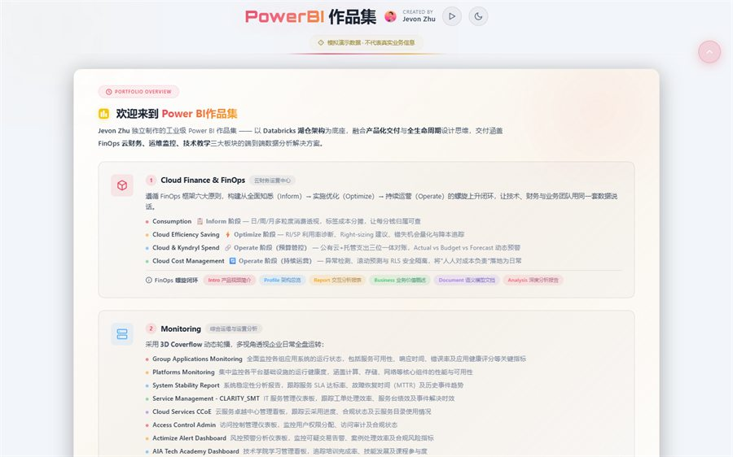

把数据
做成决策
给财务、信息中心和业务负责人做 Power BI 报表：口径先统一，上线就有人用。
我是 Jevon Zhu，成都的 Power BI 顾问。消费品、电子制造、工厂、网络教育、金融、矿业的报表都做过。

- 从业
- 10年
- 交付行业
- 6个
- 首版周期
- 2–4周
- 公开看板
- 14块
做报表的方法
报表不是把数据画出来，而是让人愿意用它做决定。十年下来，我固定走这四步——每一步都有人跳过，代价都在上线之后才付。
-
先问清楚要做什么决定
报表的起点不是数据，是使用者要回答的问题。先做用户调研和 KPI 评估，再决定这一页该长什么样。
跳过这步：做出来的是好看的数据展示页，不是决策工具。
-
把数据整理成能建模的样子
梳理数据源、做增量抽取、按 ODS 到 ADS 分层。脏活先做完，后面的模型才站得住。
跳过这步：每次加需求都从源头重跑，改一个口径要一周。
-
按业务域搭星型模型
先设计后搭建，维度和事实分开，计算表与度量值集中管理，让模型能继续长。
跳过这步：报表越加越慢，同一个指标在两块报表里算出两个数，开会先对半小时账。
-
交出去，并且让人会用
上线只是开始。培训、文档、后续的技能升级跟上，报表才会真的被用起来。
跳过这步：交付即终点。没人会改、没人敢改，半年后只有你一个人能维护。
能帮上忙的事
-
Power BI 报表开发与交付
从需求梳理、数据接入到上线发布，按周交付能用的报表页。消费品、电子制造、工厂、金融、矿业都做过，交付后一并培训使用者。
-
语义模型与 DAX 建模
星型模型、计算表、度量值分层、增量刷新与性能调优。把复杂口径收在模型里，改口径不用翻遍每一页；模型结构也决定 Copilot 能不能用对。
-
企业培训与团队赋能
从零基础到 DAX 进阶，按团队现有数据讲，不套模板。B 站「人人都爱PowerBI」有 18 集原创教程，可以先看再决定。
-
FinOps 云成本分析
把云账单、资源标签和工单对齐到业务单元与服务，做预算 vs 实际、RI/SP 节省和 SLA 追踪。作品集里有四份完整模型。
-
Databricks、Fabric 与湖仓平台
Databricks 湖仓做底座，Power BI 做展示层；需要时接入 Microsoft Fabric 与 Power Automate，把刷新、分发和权限固化下来。
-
报表体检与咨询
已有报表跑得慢、口径对不上、上线后没人用，可以做一次体检，出一份问题清单和改进顺序，再由团队决定先改哪些。
PBI 报表开发平台
集团管理报表的开发工作台。登录页公开可看，工作台里的报表页、语义模型和 PBIX 成果只对项目成员开放。
- 检索
- 报表页、事实表、度量值、语义模型、指标映射、UI 规范、交付成果，全文搜索
- 形态
- 纯数据站点，平台交互
- 权限
- 账号授权，仅限项目成员
没有项目账号？联系作者申请访问账号
问数凭什么
敢直接上线
不少智能问数让 AI 自己拼查询、自己解释口径，答得漂亮，却没人敢把它交给业务。这里的做法反过来：口径、范围和权限都收进语义模型，AI 只剩翻译一句话的工作。
| 对比维度 | 语义模型 现在用的 | 直接连数据库 |
|---|---|---|
| 口径 | 「销售额」「成本」「库存」都写成度量值，只有一种算法 | AI 每次自己拼 SQL、自己猜口径，同一个问题隔天再问可能换了算法 |
| 范围 | AI 只能调用白名单里的指标和维度，名单外的问题直说「模型里没有这个口径」 | 让 AI 自由拼查询，表越多越容易编出一个看着像的答案 |
| 关联 | 星型模型只保留一条正确的关联路径 | 订单日期、发货日期、入账日期并列，连错一个全错；一对多没处理会重复计数 |
| 字段 | 客户、毛利率、在库数量，都是业务上的说法 | KUNNR、MANDT、ZTERR 这类原始字段，先得猜是什么 |
| 权限 | 行级权限写在模型里，谁来问都只看到自己那份 | 要给 AI 一个能读全库的账号，权限得另做一套 |
| 时间 | 同比、环比、YTD 建一次，处处一致 | 每次现写日期逻辑，财年和跨月边界容易算错 |
| 速度 | 列存预聚合，回答基本即时 | 动辄扫千万行；表越多，模型选错表的概率越高 |
| 可核对 | 每条回答附 DAX，数字不对能顺着公式查下去 | 只有生成的 SQL，看着像对的，算没算错得自己验 |
| 维护 | 口径改一处，问答和报表同时生效；加指标只需在模型里加一个度量值 | 每个问题重写一遍查询，口径散落在各处，改一次要翻遍所有问答 |
演示用的是个人记账数据，企业场景常见 SAP BW、ERP 与业务台账，做法一样：先对齐口径，再让 AI 在上面说话。
不再只答一个数
一次跑完整条分析链
普通问数答完一句就结束，换个人还得从头再问。长链任务分析把「做一份汇报」整件事接过去：自己拆章节、逐页写查询取数、出图写结论，再补归因和行动清单。会上被追问的「为什么增长」「下一步做什么」，汇报往后翻就有答案。
一条链上的八步 · 全程不用人盯
- 01
拆题
读懂模型里的业务，自己列出 6 个章节、24 个问题，不用写提示词
- 02
定口径
只用语义模型里现成的度量值，不临时拼算法、不改口径
- 03
写查询
每一页先写 1–2 条只读 DAX，取到数才开口
- 04
取数
服务端直接执行；取不到就明确标注，不编数字
- 05
出图
柱、条、折线、饼在服务端画好，断网也能翻完整本
- 06
写结论
一页一条结论、3–5 个关键点，附指标和口径
- 07
归因
每个章节补一页归因，说清涨跌来自哪类产品、哪个区域
- 08
收口
总结、问题清单、P0/P1/P2 行动，末尾附全量 DAX 附录
实测案例
某教育硬件品牌 · 销售数据自动体检
不写主题、不写提示词，只点一下「生成汇报」。42 秒后拿到全篇 39 页，最后一页是真的能落地的行动清单。数字与姓名已脱敏，章节骨架与口径原样保留。
- 章节
- 6
- 洞察页
- 24
- 全篇
- 39 页
- 附录
- 12 页
这份汇报的骨架
总体规模与趋势5 页
- 整体规模与订单量走势
- 年度销售额与同比变化
- 月度节奏与季节性
- 客单价水平
- 关键指标归因
产品结构与贡献5 页
- 品类销售构成
- 销售额排名与集中度
- 利润贡献排名
- 销量排名与结构
- 关键指标归因
渠道与区域对比5 页
- 区域销售额与经销商
- 城市维度 TOP20
- 区域经理业绩
- 区域目标达成率
- 关键指标归因
时间周期与节奏4 页
- 年度结构变化
- 月度环比变化
- 工作日与周末差异
- 关键指标归因
客户结构与价值2 页
- 客户类型销售构成
- RFM 客户分群
异常波动与行动建议3 页
- 异常波动月份识别
- 低毛利与折扣异常
- 关键指标归因
产品结构与贡献 · 08
产品利润贡献排名
销量第一名，利润只排第五
- 利润排名
- 1
- 销售排名
- 8
- 利润率差
- 17.3pp
- 利润第一名与销售额第一名不是同一款产品
- 利润率最高与最低相差 17.3 个百分点
- 大单品利润薄，规模没换成利润
指标：利润、销售额、利润率 · 数据截至 2026-12-31 · 1 条 DAX · 见附录可复现
- 每页都能追到出处写清用了哪些指标、数据截止到哪天、跑了几条查询
- 数字对不上会自己说正文数字与取数结果不一致时，直接标在页面上，不藏
- 过程全程留痕末页附全量 DAX 查询，粘回 Power BI 可逐条复现
关于
我做 Power BI 十年。十年里做的其实是一件事：把数据变成能用于决策的报表——先把它讲明白，再把它做出来，最后交付进一家每天都要用它的公司。
教学站是讲的部分，作品集是做的部分，PBI 平台是交付的部分，智能问数是问的部分。四个站点合起来，才是一份完整的简历。
- 现居
- 成都
- 身份
- 世界 500 强公司 BI 开发者
- 行业
- 消费品、电子制造、工厂、网络教育、金融、矿业
不用听我说，这些都能当场点开
客户原话
-
以前云账单散在几个账号里，BU 之间口径不一致，说不清钱花在哪。现在预算 vs 实际、RI/SP 节省逐月能看，月度复盘直接拿这张看板开。
多云账号 · 云账单 + 资源标签 + 工单 · FinOps 看板纳入月度复盘 制造业 · 财务 -
集团这边数据分散在 SAP 和几个业务系统里，最难的是口径对齐。取数和语义模型理顺之后，各业务单元第一次能对着同一份数开会。
SAP ERP + 多业务系统 · 语义模型统一口径 · 集团经营会 集团 · 信息中心 -
培训用的是我们自己的数据，不是模板案例。两天下来团队能自己改口径、加页面，不用每次都找人。
电子制造 · 两天内训 · 用团队自己的数据 电子制造 · 数据分析
能力与技术
- 报表做出来就有人用手机、平板、会议室大屏都能直接打开，不装插件，不占 IT 排期。
- 全公司说同一套数指标口径只存一份，改一处处处生效，开会不用先对半天数。
- 云账单分得清成本归到业务单元，预算 vs 实际、RI/SP 节省逐月能看。
- 一句话就能查到数不用写公式，像问同事一样问数据，答案带着出处。
支撑这些能力的技术
- Power BI报表、语义模型、发布与权限
- DAX度量值、计算表、性能调优
- Microsoft FabricLakehouse、OneLake、语义模型直连
- Databricks湖仓建模、Delta 表、与 Power BI 对接
- SAP BW / ERP按月循环取数、维度对齐、报表数据接入
- FinOps云账单归集、预算 vs 实际、RI/SP 节省
- Power Query增量抽取、参数化、自定义函数
- SQLODS 到 ADS 分层、宽表与指标加工


常见问题
Power BI 报表顾问具体做什么？
通常分三段：先梳理指标和数据源，再搭语义模型、做报表页，最后交付上线并培训使用者。既可以是完整项目，也可以只补上最难的那一段，比如 DAX 性能优化或数据治理。
做一套 Power BI 报表要多久？
单一业务域的看板，数据源就绪后通常 2 到 4 周出第一版；跨系统、多业务单元的项目按数据链路长度算，常见是 6 到 10 周。具体排期要先看数据源的可用程度。
报价怎么谈？
先把范围写清楚再谈价：接哪些数据源、做多少页、交付什么、验收怎么算，写成一页范围说明，双方确认后开始。中途加需求按增量单独算，不混进原来的报价里。
需要我们这边准备什么？
三样东西：数据源的访问方式（数据库、ERP 导出、云账单都可以）、要看的指标和口径、真正用这张报表的人。前两样决定能不能开工，第三样决定做完有没有人用。
数据保密怎么约定？
开工前把数据边界写进约定：用哪种访问方式、哪些字段需要脱敏、哪些人能看到结果。能在你的环境里做就在你的环境里做；需要带走样本时，只取脱敏后的部分。
做完以后，团队自己能接手吗？
可以。交付时一并培训使用者，留下文档和口径说明；度量值集中在语义模型里管，改口径只改一处，不会散在每张报表里。后续要技能升级或做一次报表体检，也可以按段来做。
人在成都，可以远程合作吗？
可以。大部分工作远程完成，需求和验收通过视频会议。成都及周边可以线下沟通和培训，其他城市按项目安排。
Power BI 是什么，适合什么规模的公司？
Power BI 是微软的分析与报表工具，把 Excel、数据库、云账单等数据接进来，做成可以交互的看板和移动端报表。从几个人的小团队到几千人的集团都能用，区别在于建模方式和发布治理。
SAP 里的数据能接进 Power BI 吗？
可以。常见做法是从 SAP BW 或 ERP 的表、查询结果里按周期取数，先落到中转层再建语义模型；中大型项目通常按月度循环抽取，配合增量刷新控制负载。关键是维度和口径提前对齐，否则每张报表都要重新对账。
Microsoft Fabric 和 Power BI 是什么关系？
Fabric 是微软的数据平台，把 Lakehouse、数据工厂、实时分析和 Power BI 放在同一套体系里。Power BI 既是 Fabric 里的报表层，也能单独连接 Databricks、SQL Server 或 SAP。已经用 Databricks 的团队，可以只把 Fabric 当语义模型和报表层。
现有报表能接进公司的 AI 工作流吗？
能，但顺序要对：先把指标、口径和权限做进语义模型，再让 AI 在模型上说话。常见接法是自动周报、异常推送到 Teams、自然语言问数，以及一键生成汇报；AI 只负责理解问题和表达结论，算数仍然由模型完成。反过来先上 AI、再回头补口径，最后基本都要返工。
让 AI 查数，口径和权限还管得住吗？
管得住的前提是不给 AI 数据库账号。AI 只能调用模型里登记过的指标和维度，名单外的问题直接回「模型里没有这个口径」，不会现编一个；行级权限也写在模型里，谁来问都只看到自己那份。每条回答附上执行的 DAX，数字可疑时能顺着公式查回去。
聊聊你的报表
报表开发、用户培训、咨询，都可以直接找我。第一次沟通先把问题说清楚——你手上是什么数据、想让谁拿它做什么决定，再谈排期和报价。
- 成都可约线下，其他城市远程
- 数据源就绪后 2–4 周出第一版
- 交付后一并培训使用者
- 微信
- DoctorJevon
还没决定？先看 14 块公开看板，看完再聊。